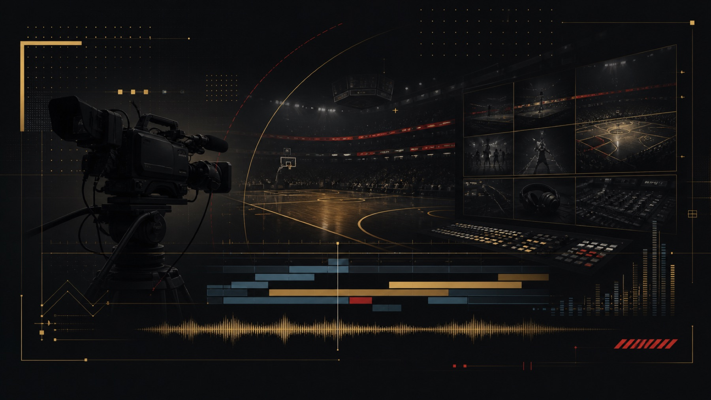
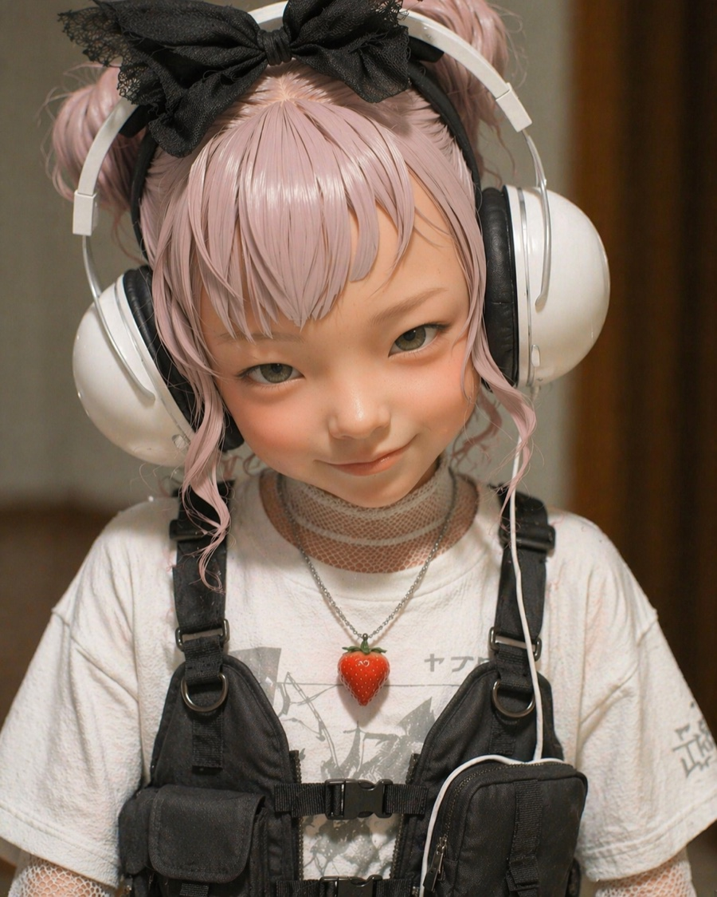
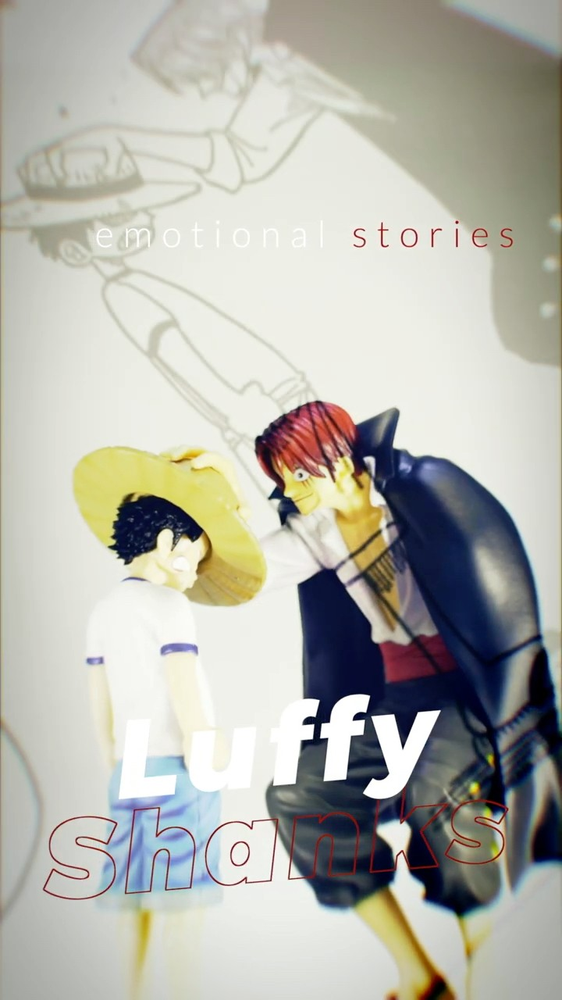
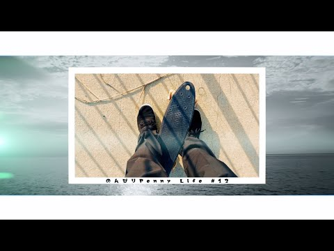
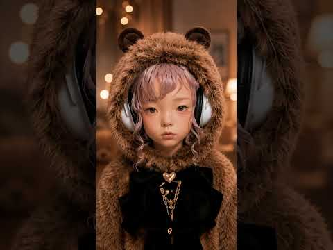
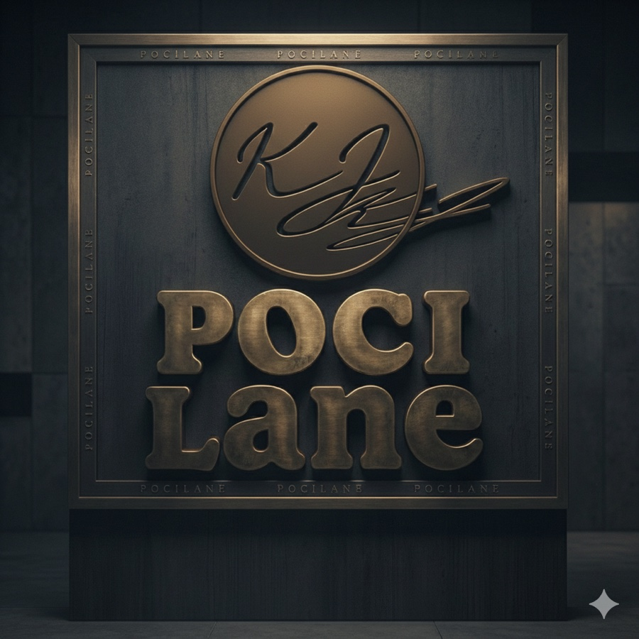

Profile / Resume Summary
幅広い現場で、最後まで任せられる制作力があります。
番組制作からWeb動画、教育動画まで、目的に合わせて映像全体を組み立てます。

私は、テレビ番組制作から企業PV、採用動画、講義動画の大量制作まで幅広く経験してきました。東京の制作会社では約18年間、番組制作の企画・演出・収録進行・編集を担当し、WOWOWのNBA中継および関連番組ではチーフディレクターとして制作スタッフ、技術、出演者との連携を担いました。
京都の制作会社では、ドキュメンタリー番組、観光PR、採用動画などを担当しました。テロップ、BGM、SE、ナレーション収録、MA仕上げまで一人で完結する現場を経験し、制作全体を見渡す力を磨きました。
現在は講義動画、研修動画、広報動画に携わっています。強みは、企画段階の構成力、撮影現場を前に進める調整力、そして編集・MAで最終的な見え方を整える完遂力です。
Core Skills
- Direction企画構成、演出、出演者打ち合わせ、収録進行、ロケ取材進行
- Editing番組、PV、YouTube、SNS動画、講義動画など編集実務
- Finishingテロップ、BGM、SE、ナレーション収録、MA仕上げ
- Office企画書、構成、打ち合わせ資料の作成
- AI画像、映像、音声、音楽etcのAI生成
Resume Timeline
現場経験を、制作力に変えてきました。
3社での役割と、強みとして伝えたい実績をまとめています。
01
株式会社エム・ティ・プランニング
テレビ番組、VP、CM、映像ソフトの企画制作会社で、ディレクターとして番組制作全般を担当。
- WOWOWのNBA中継および関連番組でチーフディレクターを担当（その他多数の番組制作にもディレクターとして参加）
- 制作スタッフ、技術、出演者とのコミュニケーションを取りながら番組制作を推進
- 東京ディズニーリゾート広報用プレスキット、イベント映像、映画DVD特典映像、MLB中継、TBSスポーツ中継関連を担当
02
株式会社海空
TV、CM、PV、採用動画、イベント関連映像を制作。ドキュメンタリー番組、PR、採用動画を担当。
- サンテレビ、BS12、eo光、自治体、大学、観光関連の映像制作を担当
- 淡路人形浄瑠璃、清川あさみ、うみぞら映画祭、京都観光PRなどのドキュメンタリー・PRを制作
- テロップ、BGM、SE、ナレーション収録、MA作業まで一貫して対応
03
株式会社グッドフィーリング
講義動画、研修動画、広報動画を制作。教育・研修領域で、安定した量産体制と編集品質を両立。
- 駿台予備校講義動画、システム研修動画、広報動画を担当
- 講師打ち合わせ、構成、収録、撮影、映像編集、MA仕上げまで対応
- 年間数百本規模の動画制作を通じ、効率的かつ柔軟な制作フローを実践
Personal Works
流行を学び、表現の幅を広げています。
ショート動画のテンポ、AI画像・動画生成、サムネイル設計を、自分の制作で試しています。

Short-form Visual
AI生成や編集の組み合わせで、短い尺に印象を残す表現を探っています。

Figure Shorts
構図、テロップ、音で静物に物語性を持たせるショート動画。

Everyday Documentary
日常の小さな場面を、短尺でも伝わるリズムで切り取っています。

Quote / Culture
言葉、情緒、生成ビジュアルを組み合わせた短尺表現の実験です。
KJ POLACINE / Personal YouTube Works
短尺表現を、実験しています。
流行りのショート動画やAI画像・動画生成を学ぶために、個人制作を検証の場として活用しています。

KJ POLACINE
新しい見せ方を、自分の制作で試しています。
個人制作では、ショート動画の流行、AI画像生成、AI動画生成を学びながら、短い尺で伝える編集を検証しています。サムネイル、テロップ、音、テンポの設計を試し、仕事の映像制作にも返せる引き出しを増やしています。
ショート動画のテンポ設計
AI画像・動画生成の試行
サムネイル、テロップ、音の検証

Message
最後まで、映像を前へ進めます。
番組、PR、教育動画、Web動画など、目的に合わせた構成と現場対応で貢献します。